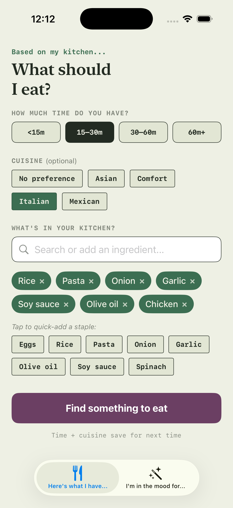
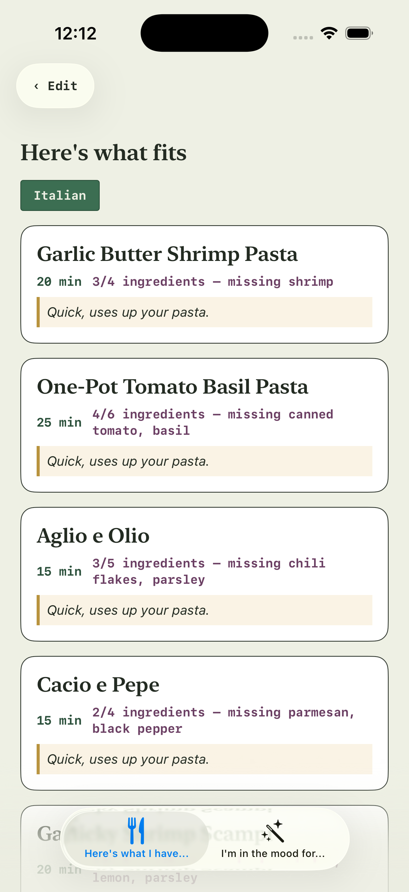
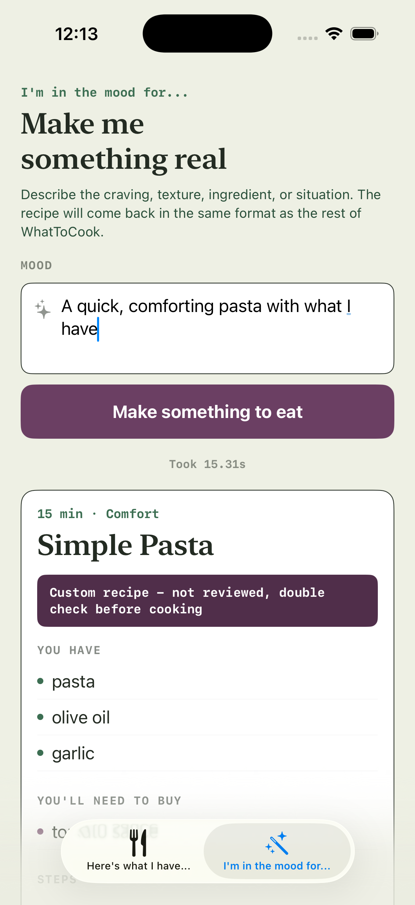
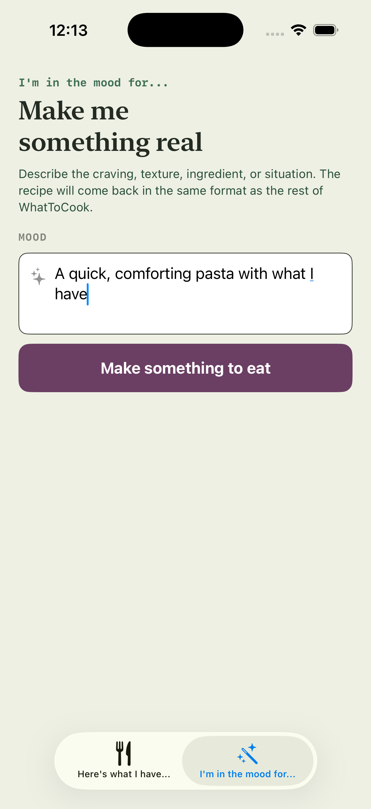

What's for Dinner
"Ugh, what should I have for dinner tonight."
This app starts by solving that — helping you decide what to cook, using a curated set of recipes matched to what you have and how much time you've got.
Try it
These are real screens from the working build, not a mockup — including the moment the LLM fallback actually fires.




Context
Trigger: I love food, and so do my friends — but on a busy night, deciding what to cook (and then actually doing it) is the friction point, not lack of interest in cooking. Existing apps either assume you've already decided or dump you into an infinite recipe scroll.
Who it's for: someone who wants to decide what to cook tonight, not plan a week ahead.
Decision log
Solve "what do I cook tonight" first, before "should I cook or order in."
This is the sharpest friction point I and the people around me actually feel. Narrowing scope let me get the app in front of real people fast and iterate on feedback, instead of building two decision flows at once. I'm also betting there's a habit loop here — if deciding is easy enough, people cook at home more and eat healthier as a side effect, not the headline.
Curated recipe set as the primary match, with LLM generation as a fallback when nothing curated is a strong match.
Generate recipes on the fly for every request, or rely on the curated set exclusively.
Curation gives reliable, trust-building results for the common case — a bad AI-generated recipe kills trust in one try. But curated-only has a hard ceiling. Fallback-not-default gets the reliability of curation for most cases while covering the long tail without hand-curating forever.
Manual ingredient entry for v1, not photo/receipt scanning.
OCR from a fridge photo or grocery receipt.
Scanning is impressive infrastructure, but doesn't test the real hypothesis — whether the decide moment works. It also adds reliability risk that would muddy whether a bad experience came from the decision engine or from bad ingredient data.
Trigger the LLM fallback on any mismatch — ingredients or time — not just when there's no partial match at all.
Keep lenient matching — show the closest partial match even if imperfect, and reserve fallback for true misses.
A partial match that ignores what you actually have or how much time you have isn't useful — it just moves the decision-fatigue problem instead of solving it. Tightening this made the fallback fire far more than expected, which was uncomfortable at first but the right trade: it forced me to see the real gaps in curation instead of letting lenient matching paper over them.
What I haven't built (yet)
- Delivery / order-in suggestionsPart of the original problem framing, but not built — scoping this thin or deferring it fully is still an open call.
- Taste learning / preference profilePlanned as a "tell us what you like" side flow to improve ranking and generation over time.
- Photo / barcode ingredient extractionScoped explicitly as v2 — see decision log above for why this isn't v1.
Proof it works
I've used it myself for 2 weeks and shared it with a few friends. Early matching logic was lenient — a partial match would display directly rather than falling back to generation. I tightened this so any mismatch on ingredients or time triggers the fallback instead of showing a weak match.
Watching those fallback cases, a pattern emerged: the recipes going missing were often the simple, well-loved ones (garlic-and-olive-oil pasta, for instance) — telling me the curated list needs more "boring but reliable" recipes, not more variety.
Retro — what I'd change now
- Ingredient input is too much friction for a first-time user. Pre-populating common non-perishables (salt, pepper, garlic, onions, pasta) so users only confirm/add proteins and produce; testing voice entry; considering a simple photo/receipt batch-upload to skip typing entirely.
- Recipe curation and ranking need tightening. Simple, most-craved recipes were underrepresented, and the ranking algorithm is too generous — it doesn't yet discriminate well between "fine match" and "actually what you wanted."
- Considering a per-user cache of generated recipes. Right now, an LLM-generated recipe is gone after the session. Caching per user (starting with local storage, since the app is small enough that this is fine for now) would reduce redundant LLM calls and lay groundwork for a "recipes you've made before" feature. There's an obvious storage-vs-LLM-call trade-off that will matter more as usage grows — not the bottleneck worth over-engineering yet.